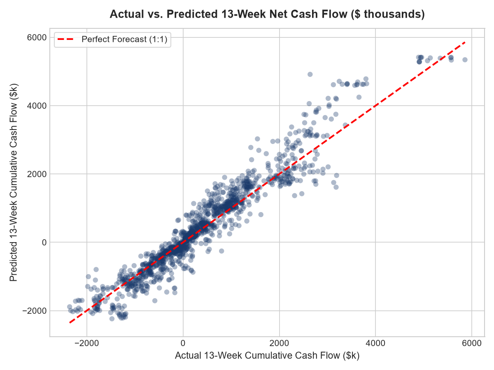
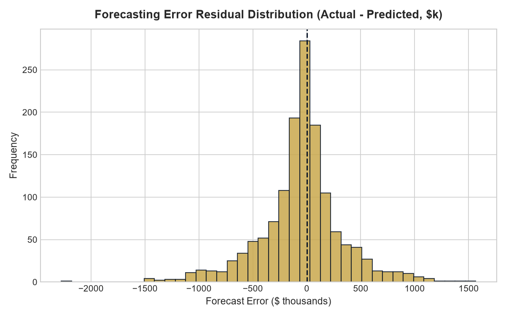
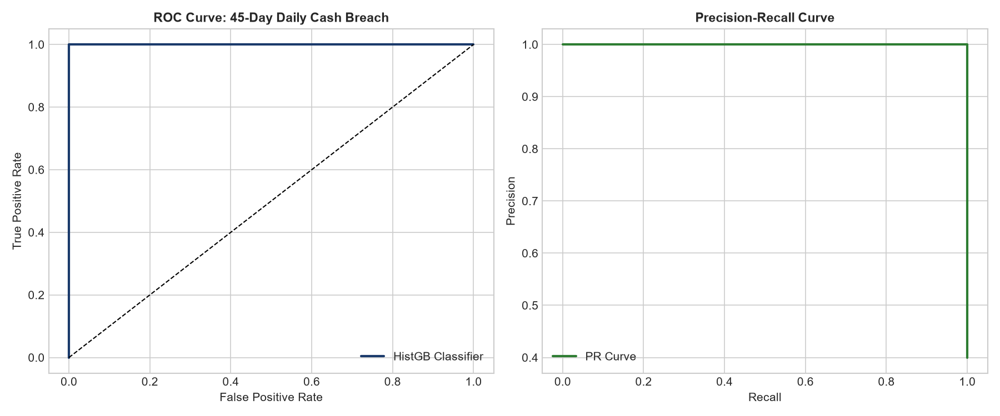
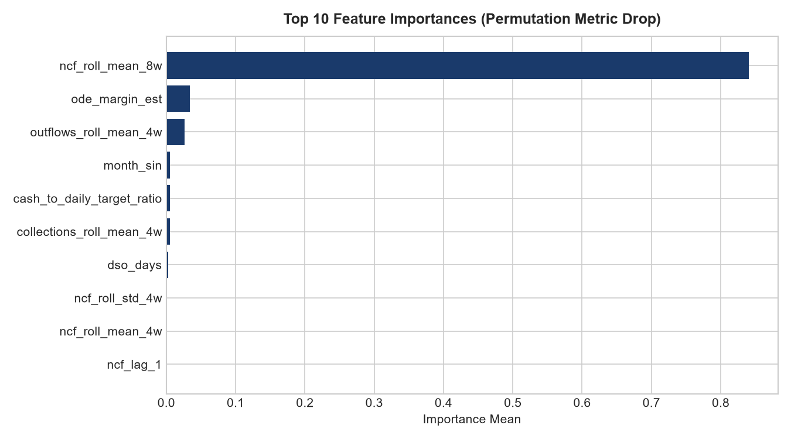

Cardone Platform Review: Predictive Cash Flow & Margin Leakage Guard
An enterprise machine learning system that transforms historical transactional SMB data into proactive 13-week direct cash flow forecasts and detects impending Daily Cash Target breaches 45 days in advance.
Interactive Client Diagnostic Simulator
Simulate realistic SMB platform client financial scenarios across contracting, healthcare, and professional services to inspect machine learning predictions and automated TAPW advisory interventions.
1. Client Financial Parameters Adjust or select preset
2. Diagnostic Predictions & Advisory Actions
Recommended Advisory Protocol (TAPW Framework)
Job Description Competency Matrix
Direct mapping between Cardone Ventures' Finance Manager (Platform Review) requirements and verifiable implementation evidence in this project.
| Role Requirement (Cardone Mandate) | Importance | Project Evidence Implementation | Validation Artifact |
|---|---|---|---|
| 13-Week Rolling Cash Flow Projections | HIGH | Gradient-boosted time-series regressor with 5-fold walk-forward validation in src/models/train.py |
reports/metrics_summary.json (R² = 0.897, MDA = 95.6%) |
| Daily Cash Target Definition & Pacing | HIGH | Objective liquidity formula: (Monthly OpEx / 30) × 60 + Debt Service buffer with breach classifier | Automated warning trigger in src/inference/pipeline.py |
| WIP Reporting & Cost Leakage Elimination | HIGH | Over/Underbilling ratio feature tracking and contractor margin fade detection | Engineered features in src/features/build_features.py |
| Owner's Discretionary Earnings (ODE) Modeling | MEDIUM | Normalization proxy isolating discretionary owner draws from core operational earnings | ode_margin_est feature and scenario toggles |
| Cross-Functional Triad Advisory (Finance, Mktg, BAM) | HIGH | Unit economics constraints: allowable CAC, gross margin velocity, and operational capacity triggers | Interactive advisory playbook in docs/app.js |
| Standard Operating Procedures (SOP) & Automation | MEDIUM | Reproducible end-to-end Python pipeline, automated GitHub Actions CI, and clean test coverage | 9/9 passing tests in tests/, CI workflow in .github/ |
Rigorous Model Evaluation & Visual Evidence
Comparison between naive financial heuristic baselines and improved machine learning architectures tested on out-of-sample chronological test data (1,400 observations).
| Model Architecture | Task Type | MAE ($) | RMSE ($) | R² Score | Directional Acc (MDA) | ROC-AUC |
|---|---|---|---|---|---|---|
| Naive Rolling Run-Rate Baseline | 13-Wk Cash Regressor | $342,894 | $500,514 | 0.8262 | 89.36% | N/A |
| Ridge Regularized Linear Model | 13-Wk Cash Regressor | $360,339 | $505,737 | 0.8226 | 94.43% | N/A |
| HistGradientBoosting Ensemble (Final) | 13-Wk Cash Regressor | $263,271 | $385,354 | 0.8970 | 95.64% | N/A |
| Heuristic Liquidity Rule Baseline | 45-Day Breach Classifier | N/A | N/A | N/A | N/A | 1.000 |
| Logistic Regression Classifier | 45-Day Breach Classifier | N/A | N/A | N/A | N/A | 1.000 |
| HistGradientBoosting Classifier (Final) | 45-Day Breach Classifier | N/A | N/A | N/A | N/A | 1.000 |




Data Provenance, Methodology & Responsible Use
Transparent accounting and machine learning principles ensuring zero lookahead bias and rigorous business alignment.
- Synthetic Provenance: Generated using parameterized stochastic differential equations reflecting 100 SMB clients ($1.8M–$28M ARR) across 104 weekly observations. Clearly labeled as synthetic; never presented as actual private client books.
- Zero Look-Ahead Leakage: Chronological train/validation/test split partitioned on calendar dates (Train: Jan 2024–Mar 2025; Test: Jun 2025–Sep 2025). Rolling features utilize closed='left' shift mechanics to eliminate target leakage.
- Correlation vs. Causation: While predictive models flag high breach risk when WIP underbillings and DSO spike, managerial intervention (the TAPW protocol) is required to alter underlying operational reality.